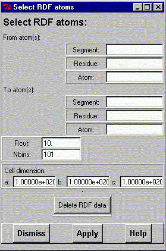
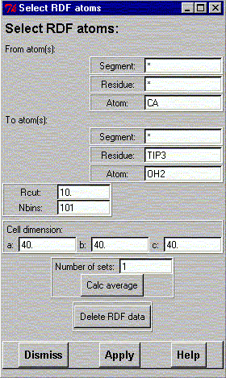
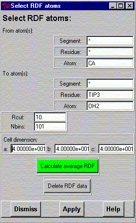

**************************************************************************
Calculate radial distribution function widget
Leif Laaksonen CSC 1999
**************************************************************************
It is possible to calculate a distribution function (g(r)) for an atom using gOpenMol from one frame or as an average from a sequence of frames like a molecular dynamics simulation. It is possible to arbitrarily choose the center atom and the atom around that.

The "From atom(s):" define the center atom(s) around which the distribution will be calculated. The "To atom(s):" define the atom(s) which distribution will be calculated.
The "Rcut:" value defines the distance to which the distribution will be calculated and "Nbins:" define the number of intermediate values (bins) for which the distribution will be calulated.
If the periodic cell (most likely you have been using period boundaries), inside which your atoms and molecules are located, has not been defined before it has to be defined here.
Pressing now the "Apply" button calculates the radial distribution function of the "To atom(s)" around the "From atom(s)" for the structure displayed in the graphics window.
After pressing the "Apply" button" one gets the following widget:

There is now one furter entry and button displayed. An entry titled "Number of sets" defining for how many structures the RDF has been calculated and accumulated. It is thus possible to read by hand more frames into gOpenMol and successively calculate the RDF.
After the number of RDFs has been calculated (accumulated) it is possible to calculate the average for these RDFs by pressing the "calc average" button.

It is now possible to automaticly calculate the average for all the frames in the trajectory file by pressing the "Calculate average RDF" button. gOpenMol goes now through your trajectory file frame by frame and calculates and accumulates the RDF. The first frame, last frame and step frame numbers are taken from "Trajectory Main" widget. After the last frame an average RDF is calculated.
It is always possible to export the calculated (accumulated) RDF through the "export rdf" command or the "Export" pulldown menu. On the Windows platform it is also possible to copy the RDF to the Paste buffer through the "Edit" - "Copy" - "RDF" pulldown menu.
Line command : see calculate command
**************************************************************************
LUL/1999
**************************************************************************